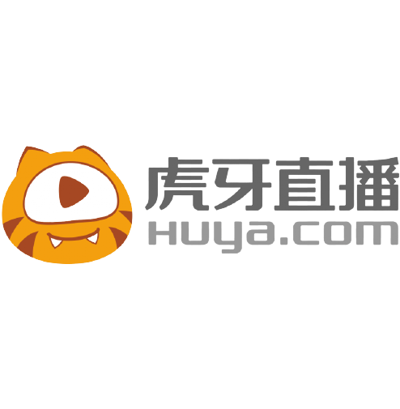

Alienware
Build a custom gaming PC with Alienware. Alienware manufactures the world's best high-performance PC gaming laptop and desktop computers. Their new laptops have slick designs with customizable lighting and powerful processors, outstanding graphics performance, comfortable keyboard, and great audio quality. Take 10% off any new Alienware system with code "liquid10off"
Verizon
Verizon is one of the world’s leading providers of technology, communications, information and entertainment products and services. Headquartered in New York City and with a presence around the world, Verizon offers data, video and voice services and solutions on its award-winning networks and platforms, delivering on customers’ demand for mobility, reliable network connectivity, security and control.
Verizon and Team Liquid are forming an innovation partnership that will reimagine fan engagement around the gaming industry’s biggest moments. In-person experiences will be more immersive, giving fans new ways to experience their favorite events, and enabling streamers to engage fans live from those events for the first time. Virtual reality innovations will allow fans to experience live events together, remotely, giving them the best seats in the house with 360-degree views that put them in the middle of the action. This partnership will showcase how Verizon 5G will enable fans, streamers and players to experience gaming in a whole new way, and prove that 5G is the technology that will move the industry forward, with Verizon at the forefront.
Monster Energy
Based in Corona, California, Monster Energy is the leading marketer and distributor of energy drinks and alternative beverages. Refusing to acknowledge the traditional, Monster Energy supports the scene and sport.Whether motocross, off-road, NASCAR, MMA, BMX, surf, snowboard, ski, skateboard, or the rock and roll lifestyle,Monster Energy is a brand that believes in authenticity and the core of what its sports, athletes and musicians represent. More than a drink, it’s the way of life lived by athletes, sports, bands, believers and fans
SAP
As market leader in enterprise application software, SAP helps companies of all sizes and industries run better. From back office to boardroom, warehouse to storefront, desktop to mobile device – SAP empowers people and organizations to work together more efficiently and use business insight more effectively to stay ahead of the competition. SAP applications and services enable more than 378,000 business and public sector customers to operate profitably, adapt continuously, and grow sustainably.
Honda
Honda offers a full line of reliable, fuel-efficient and fun-to-drive vehicles with advanced safety technologies sold through over 1,000 independent U.S. Honda dealers. The Honda includes the Fit, Civic, Insight, Accord and Clarity series passenger cars, along with the HR-V, CR-V, Passport and Pilot sport utility vehicles, the Ridgeline pickup and the Odyssey lineup minivan.
Honda has been producing automobiles in America for more than 35 years and currently operates 19 major manufacturing facilities in North America. In 2018, more than 90 percent of all Honda brand vehicles sold in the U.S. were made in North America, with nearly two-thirds made in America, using domestic and globally sourced parts.
IMC
When you are determined to be the best, act smart, think creatively and move fast, unthinkable things can happen. This is true for competitive gaming as it is true for the world of technology driven trading. Our teams combine strategy, skill, knowledge and vigor to achieve what has never been done before.
As one of the world’s most innovative algorithmic trading firms, IMC combines technology and creativity to constantly push the edge and stay ahead of the competition. Like Team Liquid, we exist to grasp opportunities, keep learning, keep imagining, enable talent to the max and celebrate success big time when it happens.
Twitch
Founded in June 2011, Twitch is the world’s leading social video platform and community for gamers. Each month, more than 100 million community members gather to watch and talk about video games with more than 1.7 million broadcasters. Twitch’s live and video on demand platform caters to the entire video game industry, including game developers, publishers, media outlets, events, casual content creators, and the entire esports scene.
Jersey Mike's Subs
Jersey Mike’s, a fast-casual sub sandwich franchise with more than 2,000 locations open and in development nationwide, believes that making a sub sandwich and making a difference can be one and the same. Jersey Mike’s offers A Sub Above®, serving authentic fresh sliced subs on freshly baked bread – the same recipe it started with in 1956 – and is passionate about giving back to its local communities.
Kingston
Kingston FURY – the gaming division of the world leader in memory products and tech solutions, Kingston Technology, continues to provide gamers the advantage needed to experience the capabilities of exceeding system limitations and setting new standards. With Kingston FURY DRAM, Team Liquid and gamers around the world can experience a powerful performance boost in their gaming.
HyperX
For 18 years, HyperX’s mission has been to develop gaming solutions for every type of gamer and the brand is consistently recognized for delivering products that provide superior comfort, aesthetics, performance, and reliability. Under the tagline of “WE’RE ALL GAMERS,” HyperX products are the choice of everyday gamers as well as celebrity ambassadors, pro gamers, tech enthusiasts worldwide because they meet the most stringent product specifications and are built with best-in-class components

HUYA
HUYA Inc. (NYSE: HUYA) is the No.1 game live streaming platform in China. We have the largest and most active game live streaming community in terms of average MAUs, and average daily time spent on mobile app per mobile active user in the fourth quarter of 2017 and 2018, and the largest number of active broadcasters in 2017 and 2018, according to a report by Frost & Sullivan, which was commissioned by us. As the pioneer and market leader, we are well positioned to expand further in the rapidly growing game live streaming market in China. We cooperate with e-sports event organizers, as well as major game developers and publishers, and have developed e-sports live streaming as one of the most popular content genres on our platform. Building on our success in game live streaming, we have also extended our content to other entertainment genres, such as talent shows, anime and outdoor activities.

Secretlab
Secretlab was established in 2014 to create the pinnacle of gaming seats—each extensively designed and engineered with only materials of the highest grade to ensure absolute comfort and unparalleled support. Today, Secretlab is the global choice of gaming seats for the world's most premier gaming tournaments, top esports professionals, and over 300,000 satisfied users from more than 50 countries worldwide, alongside rave reviews from international media publications. And we're only getting started.